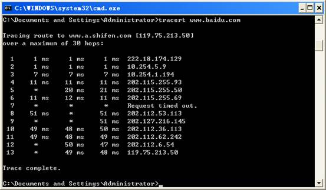

1、路由信息探测原理
1.1域名
路由是指信息从源穿过网络传递到目的地的行为，在传播路径中至少经过一个中间节点。
路由通常与桥接来对比，在粗心的人看来，它们似乎完成的是同样的事。它们的主要区别在于桥接发生在OSI参考模型的第二层（数据链路层），而路由发生在第三层（网络层）。这一区别使二者在传递信息的过程中使用不同的信息，从而以不同的方式来完成其任务。
路由的话题早已在计算机界出现，但直到八十年代中期才获得商业成功。究其主要原因是七十年代的网络普遍很简单，发展到后来大型的网络才较为普遍。
1.2基于记录路由选项的路由探测
ping -r www.aorb.org命令可实现记录中间路由的功能，返回的结果是原始地址到目标地址之间的所有路由器的IP地址。
1）ping命令发出的是类型为8的ICMP数据报，当使用ping -r时，这个类型为8的ICMP数据报被装在一个IP数据报里，IP数据报的Options(选项)字段预留出给中间路由器写入IP的地方，这个地方不太大，只能容纳9台中转路由器的IP地址。
2）当这个数据报被发送端送出后，每经过一个中转路由器，中转路由器的IP软件便会在此IP数据报的选项字段中加入一条这个中转路由器的IP地址。
3) 当这个数据包到达目的地时，目的设备便会生成一条类型为0的ICMP数据报，这个ICMP数据报被封装在一个新的IP数据报里，新IP数据报的Options字段中拷贝了刚才收到的IP数据报中的Options字段。
4) 当这个新IP数据报回送到源发送端时，您便会在屏幕上看见一些中间路由器的IP地址了。
1.3基于UDP协议的路由探测
TRACERT是一种TCP/IP实用工具(源于“Trace Route”)，在DOS和UNIX系统下都有此命令。它将您的计算机与目标服务器间传输一个包的路径情况报告给您。TRACERT通过向目标发送不同 IP 生存时间 (TTL) 值的“Internet 控制消息协议 (ICMP)”回应数据包，Tracert 诊断程序确定到目标所采取的路由。要求路径上的每个路由器在转发数据包之前至少将数据包上的 TTL 递减 1。数据包上的 TTL 减为 0 时，路由器应该将“ICMP 已超时”的消息发回源系统。
Tracert 先发送 TTL 为 1 的回应数据包，并在随后的每次发送过程将 TTL 递增
1，直到目标响应或 TTL 达到最大值，从而确定路由。通过检查中间路由器发回的“ICMP 已超时”的消息确定路由。
1.4基于ICMP Echo Request的路由探测
这种探测方式与基于UDP协议的路由探测的实现步骤一样，但发送端送出的不是一个UDP数据包，而发送的是一个ICMP类型为8的Echo Request(回显请求)数据报文。与基于UDP协议的路由探测技术一样，每次发送端都会把TTL值加1，每个中转路由器都对TTL值减1，如果为0，便丢弃后给发送端发送一个超时报文，若不为0，则继续转发给下一跳。唯一不同的是，当这个数据报到达最终目的节点时，由于发送端发送的是Echo Request报文，所以接收端就会相应一个ICMP类型为0的数据报文。这样，当发送端收到ICMP类型为0的数据报文时，就知道了全部路由已经查询完毕，终止继续探测。
2、tracert命令详解
TRACERT是一种TCP/IP实用工具(源于“Trace
Route”)，在DOS和UNIX系统下都有此命令。它将您的计算机与目标服务器间传输一个包的路径情况报告给您。
其最简单的使用方法为“TRACERT地址”，地址为目标服务器的域名或IP地址。

从以上结果可看出到达目标经过了13个节点并且包传输的很快(低于100ms)。第一列显示了节点数，第一列最后一行为到达最终目标所经过的节点总数(在我们的例子中到达最终节点，www.baidu.com了13个节点)。其后的三列为各节点的响应周期。如果在其中出现星号则表示超时(这是说在限定包存活周期内目标没有响应) 。在各列中如果都小于100ms则可认为是不错的状态。在后面的两列显示了路途中的IP地址。
tracert [-d] [-h maximum_hops] [-j host-list] [-w timeout] target_name
|
选项 |
描述 |
|
-d |
指定不将 IP 地址解析到主机名称。 |
|
-h maximum_hops |
指定最大跳跃点数以跟踪到称为 target_name 的主机的路由。 |
|
-j host-list |
指定Tracert 实用程序数据包所采用路径中的路由器接口列表。 |
|
-w timeout |
等待 timeout 为每次回复所指定的毫秒数。 |
|
target_name |
目标主机的名称或 IP 地址。 |
3、路由信息探测的防范方法
通过配置路由器，使得路由器丢弃TTL过期的数据包，并屏蔽ICMP报文。